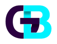

Sitios y aplicaciones
Webs claras y rápidas, y apps para celular, para que tus clientes te encuentren y tu equipo trabaje desde donde esté.
DISEÑAR / CONSTRUIR / PUBLICAR
Gabriel BustosCreo sitios web, aplicaciones y tableros de datos a medida, para que tu negocio o equipo trabaje con más claridad.
EN QUÉ PUEDO AYUDARTE
Webs claras y rápidas, y apps para celular, para que tus clientes te encuentren y tu equipo trabaje desde donde esté.
DISEÑAR / CONSTRUIR / PUBLICARPlanillas, archivos y sistemas que no se hablan entre sí: los conecto y ordeno para ahorrar tareas manuales.
CONECTAR / ORDENAR / AUTOMATIZARTus números en un solo lugar, con indicadores fáciles de leer para entender qué pasa y decidir qué hacer.
MEDIR / EXPLORAR / DECIDIRUbicá clientes, zonas o recorridos en un mapa y descubrí patrones que en una tabla no se ven.
UBICAR / CRUZAR / DESCUBRIRMUESTRAS DE LO QUE PUEDO HACER
Aplicación móvil con transferencias entre cuentas, desarrollada como proyecto académico de Desarrollo de Aplicaciones Móviles.
Sitio web construido con Vite y Tailwind, con una identidad visual propia y atención al detalle en interfaz y tipografía.
Un flujo que toma datos de distintas fuentes, los limpia y los deja listos para consultar en tableros y mapas.
CÓMO TRABAJO
Escucho tu necesidad y el problema real.
Propongo una solución simple y la construyo por etapas.
Te entrego algo que podés usar desde el primer día.
¿TENÉS UNA IDEA O UN PROCESO PARA MEJORAR?
Si tenés un negocio, un emprendimiento o una tarea que se haría más fácil con tecnología, contame y vemos cómo resolverla.